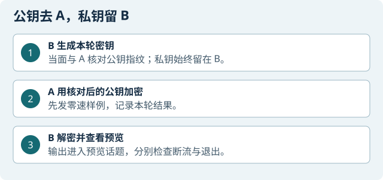

本章目标
选做；本页只讲独立预览，不连接底盘速度执行口。 在 ROS1 中交换 RSA 公钥、人工核对指纹、加密有限样例并在 B 端解密到预览话题。本章只将解密结果输出到预览话题，不连接底盘速度执行口。本章不要求读者生成、复制或公开私钥。
课程实现使用 RSA-2048 与 PyCryptodome 3.23.0、PKCS#1 v1.5。加密本身不认证发送者，也不防重放；人工核对公钥指纹只确认本轮公钥来源。
本章角色：A 是加密发送端，B 是本机生成密钥并接收预览的小车，M 可做限时抓包。所有示例只在自有隔离实验主机间运行，输出仅进入预览话题。
准备与检查
角色：A 是加密发送/公钥接收端，B 本机生成密钥并解密预览，M 可选做限时抓包。需要实验八源码与固定版本 vendor、ROS1、独立 catkin 工作区和与 rospy 匹配的 Python。网站不提供私钥或完整 VM。若缺少这些文件或版本不符，先停在原理学习，不安装来源不明的软件。
所有速度样例只进入 /lab8/preview_cmd_vel。不得添加运动开关、改到 /cmd_vel 或连接实车底盘。密钥只在 B 本机生成；私钥不显示、不拍照、不传给 A/M、不提交。
操作步骤
核对 A、B、M 身份
A / B / M 本机 读取主机名、接口、路由、ROS 发行版、Python 版本与处理器架构；记录本轮地址，不复用历史值。B 由本地终端核实网络身份。
ROS master 归属不明、B 的架构/解释器不清或路由不通：暂停，不复制代码或生成密钥。
确认 B 静止且不另启 master
B / 看车人 确认原 master 的主机与端口、现有底盘节点状态、车辆静止。若本章只做离线预览，也不需要启动底盘。不得另起 roscore 覆盖现场 master。
若有其他遥控、导航或底盘动作：先由原操作者正常结束冲突任务，不能停止共享服务。
复验 A 的离线资料
A，普通用户终端 在已提供的实验八目录依次运行：
cd ~/lab8_prep python3 工具/lab8.py self-test python3 工具/lab8.py loopback bash 工具/lab8_control.sh build bash 工具/lab8_control.sh self-check记录固定版本、日志路径与退出码。回环结果只说明本机程序过程。
导入失败、版本不是课程固定版本、构建失败：保存错误，不全局升级 Python，不继续部署。
确认 B 的 ROS/Python 配对
B，本机终端 每个新终端都要重新 source 与 rospy 匹配的 ROS 工作区和解释器。Kinetic 通常配 Python 2，Noetic 通常配 Python 3；必须以 B 实际安装为准：
# 按B实际情况只选对应一组 source /opt/ros/kinetic/setup.bash PY=python2 # 或：source /opt/ros/noetic/setup.bash # PY=python3 "$PY" -c 'import rospy, sys; print(sys.version)'用同一解释器只读检查 ROS、Crypto 版本、服务类型和架构。ARMv7/Python 2 必须用资料规定的本机源码构建路线，不能拷 x86 wheel。
解释器不匹配、服务类型缺失或源码构建报错：停止并保留日志；不要尝试在线 pip 修补。
建立新证据目录并核对代码来源
A / B 每次实验使用新的本地证据目录；核对课程包 manifest、源码版本和文件哈希。传输包先排除 runtime、密钥、账号文件与旧证据。
目标目录已有旧版：先核对版本并另存；不能把新旧文件解到同一目录混合。
在 B 本机生成 RSA 密钥

操作示意｜预览话题只用于核对数据，不接实车控制。 B，本机终端 仅用课程工具生成 RSA-2048 密钥并显示公钥指纹：
cd ~/lab8_prep "$PY" 工具/lab8.py keygen --key-dir ~/lab8_keys --robot-local "$PY" 工具/lab8.py fingerprint --public-key ~/lab8_keys/public.pem stat -c '%a %n' ~/lab8_keys ~/lab8_keys/private.pem确认目录权限为 700、私钥文件为 600，只检查权限和存在性，不运行 cat、不复制私钥。
私钥权限过宽、工具报告密钥不匹配或目录中有来源不清的旧密钥：停止并保留现状；不覆盖、不删除旧私钥。
A 启动公钥接收服务
A 的 ROS1 容器终端 进入课程工作区 shell，在本轮独立证据目录启动一次性接收服务：
cd ~/lab8_prep bash 工具/lab8_control.sh shell # 以下在A容器中运行；保持终端打开 mkdir -p /lab8/runtime/evidence python3 /lab8/工具/lab8_ros.py receive-key \ --key-dir ~/lab8_remote_key \ 2>&1 | tee /lab8/runtime/evidence/receive-key.log不要另起 master；保留运行日志。
服务类型或节点归属不明、已有同名服务：先停止当前步骤并核实，不并行启动多个接收服务。
B 发送公钥，A 核对完整指纹
B → A B 使用自己的 ROS 地址连接原 master，然后发送公钥：
read -r -p '小车当天地址: ' ROBOT_IP unset ROS_HOSTNAME export ROS_MASTER_URI="http://${ROBOT_IP}:11311" export ROS_IP="$ROBOT_IP" cd ~/lab8_prep "$PY" 工具/lab8_ros.py send-key --key-dir ~/lab8_keys确认 ROS 地址取自 B 当天实际接口。A 在本机计算收到公钥的 SHA-256，与 B 本机显示的完整指纹逐字符核对。保留指纹和成功回执，不保存私钥。
任何字符不一致、服务回执失败或公钥来源不明：停止本轮发送，重新检查当前密钥目录；不要覆盖密钥“试到一致”。
启动 B 的独立预览接收器
B，新终端 重新 source 正确 ROS、工作区与匹配 Python，启动课程接收器并保存日志：
cd ~/lab8_prep "$PY" 工具/lab8_ros.py robot --key-dir ~/lab8_keys \ 2>&1 | tee ~/lab8_evidence/B_preview.log另开 B 的 ROS 终端检查话题类型与发布/订阅者：
预览话题不得有底盘驱动订阅者，本章节点不得发布到rostopic info /cmd_vel rostopic info /lab8/Cypered_cmd_vel timeout 10 rostopic echo /lab8/preview_cmd_vel/cmd_vel。主题名不符、发现底盘订阅或出现运动：立即关闭发送器、实体停车并结束实验。
A 开始限时抓包
A / 可选 M 在隔离实验网络中，只对本轮 A/B 实验地址与端口限时抓包；检查抓包文件正在增长，记录接口与过滤条件。抓不到单播不代表加密失败。
目标范围不符、PCAP 不可写或包含无关网络：停止抓包并调整到本轮隔离实验范围，不能扩大过滤目标。
先发送零值样例
A 发送端；B 预览端 用课程发送端对已核指纹加密并发送一组零速预览样例。B 只观察预览话题，确认字段回读为全零。
预览未归零、发送回执超时或数据进入非预览主题：停止发送，不开始非零样例。
发送有限的短样例并比对
A 的 ROS1 容器；B 预览端 A 输入已与 B 核对的完整公钥指纹，然后启动课程发送器：
read -r -p '输入已核对的完整公钥 SHA256: ' KEY_FP python3 /lab8/工具/lab8_ros.py teleop \ --public-key ~/lab8_remote_key/public.pem \ --fingerprint "$KEY_FP"该终端需要交互键盘，不要接
tee管道。仅在预览模式下短按一次 w、松开并按空格归零，再短按一次 a 并归零；B 每次都应显示与该输入相符的预览字段。按 q 正常退出发送器。不要把预览值用于底盘控制。解密值与输入不符、数据缺失或发生意外运动：立即停止发送，保持车辆静止，保留日志与 PCAP。
检查异常密文与断流归零
A / B 仅使用课程提供的本地测试样本验证异常密文被拒绝且预览归零；随后按课程样例停止发送，观察断流保护是否在规定时间归零。不要自行构造可能送到底盘的输入。
异常密文导致非零预览、断流后仍保留非零值或超时：停止实验；不关闭校验继续。
结束发送、接收和抓包
A → B → M A 发送端先正常退出；B 确认预览值为零后停止接收器；A 停止一次性公钥服务；最后正常结束抓包并保存 captured/received/dropped 统计。
任一节点退出状态不明：逐项核对本轮进程，不全局结束 ROS，不删密钥目录。
封存证据并检查泄露
A / B / M 保存两端公钥指纹、源码/工具版本、服务回执、预览日志、异常/断流记录、PCAP 和 SHA-256。归档前检查证据中没有私钥内容、账号口令、私钥路径之外的秘密或未经脱敏的真实地址。
发现私钥被复制到证据目录：停止发布/共享，按本机密钥管理要求处理；不要把包含私钥的归档上传到课程站点。
检查与证据
检查顺序：A/B 公钥指纹相同 → ROS 服务与话题类型正确 → B 只发布预览 → 零值和有限样例能正确解密 → 异常密文与断流时归零 → 抓包帧可与 ROS 日志对应 → 所有进程退出、预览归零。逐项记录本轮实际输出；本章预览流程不验证底盘运动。
常见问题
No module named Crypto：核实运行 rospy 的同一个解释器与固定 vendor 路径；不安装不明同名包。- ROS 服务类型找不到：确认独立工作区构建和新终端 source 顺序；不另起 master。
- 指纹不匹配：立即停止发送，确认 B 当前公钥与 A 接收目录；不覆盖私钥。
- PCAP 未看到完整密文：检查抓包接口、ROS 主题和单播路径；抓包缺失不等于加密失败。
- 预览不归零或意外接到底盘：停止发送、实体停车，保留证据；不切换运动主题或放宽校验。
收尾
停止顺序：A 发送端退出 → B 预览确认零并停止接收器 → A 公钥服务退出 → 抓包正常结束 → 核查无本轮进程及意外发布者 → 归档公钥指纹、日志和哈希。私钥留在 B 本机受限目录，绝不加入网站、截图或资料包。保留原 ROS master 和其他组共享进程。
本章证据范围
独立预览演示不等于底盘控制。RSA 加密不提供发送者认证或防重放；人工指纹核对是本轮公钥核验，不是完整链路安全保证。现场实车预览、离线 loopback 与离线示例应分开标注。